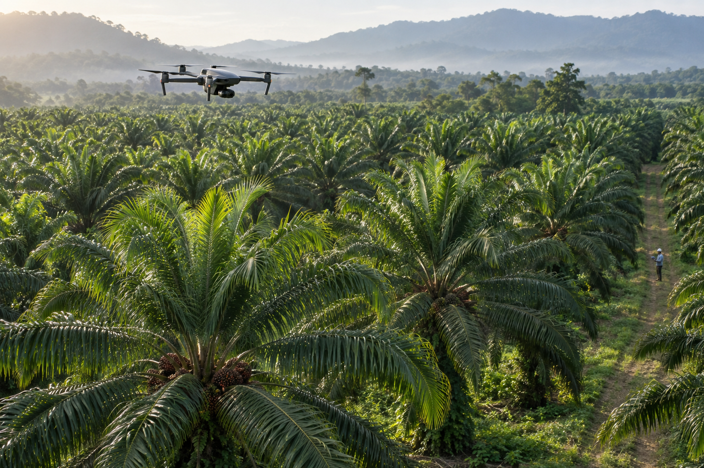
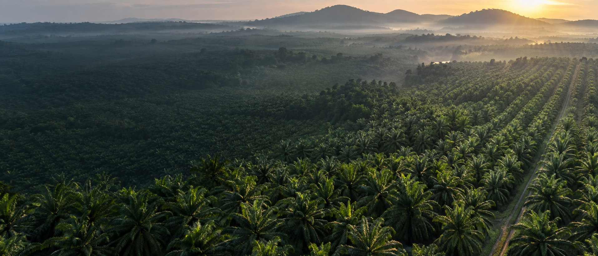

One palm. One history.
Repeat surveys build a traceable health record for every mapped tree.


Repeat surveys build a traceable health record for every mapped tree.
PalmWatch combines calibrated drone imagery, field observations, and confirmation data to screen palm health and focus inspection where it matters most.
Explore the methodPalmWatch is being developed as a scientifically validated field-research platform—not a black-box diagnosis. It tracks spectral, structural, thermal, environmental, and field evidence over time, then ranks palms for expert inspection.
Recommended minimum defensible research design for the expanded NBL study; these are study targets, not deployment results.
Designed for plantation leaders, agronomists, and field teams to move from signal to verified action.
Give every palm a stable identity and compare it with its own history, similar-age neighbours, and local healthy controls.
Combine multiple signals to identify palms that warrant inspection—without treating one index or image as a diagnosis.
Turn flagged palms into assigned inspections, confirmation records, intervention follow-ups, and management reports.
Repeated evidence matters more than a single abnormal scan. PalmWatch is built around a closed learning loop between remote sensing and the field.
Register boundaries, blocks, farms, and stable palm IDs before analysis begins.
Collect repeat RGB, multispectral, thermal, weather, and field observations under controlled protocols.
Compare each palm with its own baseline, local peers, and confirmed reference cases.
Use agronomist inspection and laboratory evidence to validate labels and improve the model.
The expanded NBL research scope evaluates the context around every tree so the model can distinguish possible disease from water, nutrient, pest, and management stress.
No universal NDVI threshold can diagnose a palm. PalmWatch combines calibrated measurements, neighbour comparisons, temporal change, and confirmed field labels.
NDVI, NDRE, GNDVI, red edge, NIR, and calibrated reflectance.
Crown area, density, symmetry, gaps, yellowing, and visible change.
Canopy temperature, transpiration stress, and neighbour-relative anomalies.
Soil, weather, age, seed, management history, and spatial clustering.
No. PalmWatch detects patterns consistent with elevated risk and prioritizes palms for expert inspection. Field or laboratory confirmation remains essential.
A persistent decline while nearby palms remain stable is more informative than a single unusual reading. Repetition also reduces seasonal and flight-condition noise.
The realistic first target is a three-way screen: healthy, other stress, and suspected Ganoderma. More detailed disease and severity labels require sufficient confirmed samples.
Training, validation, and locked testing should be separated by farm—not randomly by tree—to prevent information leakage between similar palms from the same location.